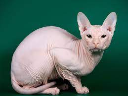

GATO EGIPCIO

El sphynx o gato esfinge (también llamado de forma
común pero erróneamente gato egipcio) es una raza de gato originaria de Canadá. La característica
más llamativa de esta raza es la aparente ausencia de pelaje y su aspecto delgado y esbelto
. Aunque los ejemplares de la raza parecen ser gatos sin pelos, hay que destacar que verdaderamente
no son gatos pelados, sino que presentan la piel cubierta de una capa de vello muy fino,
corto y parejo, casi imperceptible a la vista o al tacto.
El gato sphynx fue la primera raza sin pelo o sin pelaje
aparente reconocida por las asociaciones felinas que llevan un registro genealógico
de los felinos de raza. En la actualidad, el sphynx comparte junto con el peterbald y
con el Don sphynx la exclusividad de ser una de las tres únicas razas peladas o sin pelos.
El gen responsable de la modificación en el pelaje del sphynx es recesivo y tiene
dominancia incompleta sobre su alelo al igual que el Devon Rex, mientras que las otras
dos nuevas razas de Rusia, el peterbald y el Don sphynx, tienen sus propias mutaciones
independientes y de tipo dominante.
Los sphynx causan reacciones alérgicas a las personas
alérgicas a los gatos porque la sustancia que produce la alergia se encuentra en la saliva
y en las secreciones de la piel de los gatos, no en el pelo.1? Esta raza de gatos posee
enormes cantidades de dicha sustancia, ya que producen muchas secreciones y grasa
debido a la alimentación que consumen, la cual está diseñada para aportar una gran
energía al sphynx y evitar que pierdan su calor corporal.